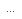

Населенный пункт адреса
Населенный пункт адреса
Предназначена для ввода населенного пункта по детальному шаблону.
Открывается из шаблона ввода адреса в поле Город, населенный пункт по кнопке Выбрать.
Выбор вида территориального деления
Ввод населенного пункта
Выбор вида территориального деления
- Перед заполнением адреса с помощью флажка можно выбрать:
Ввод населенного пункта
- В поле Субъект КР необходимо ввести наименование субъекта Кыргызской Республики, к которому относится населенный пункт.
- Если адресный классификатор для этого субъекта Кыргызской Республики не заполнен, будет выведено сообщение.
- Поля Округ, Район, Город, Внутр.район, Нас.пункт и т.д. предназначены для ввода частей адреса. Поля, которые должны быть заполнены, зависят от адреса. Например, в некоторых адресах может не быть района, в других - города или населенного пункта. Если выбрано устаревшее наименование, программа выводит сообщение. Подтвердите свой выбор, нажав кнопку Да для продолжения ввода. Для того чтобы программа не показывала в списках устаревшие адреса, при настройке данного вида контактной информации включите флажок Скрывать неактуальные адреса.
- После окончания ввода города или населенного пункта нажмите ОК для продолжения ввода адреса.
- Если для региона адреса загружен адресный классификатор, то по мере набора в каждом поле будут предлагаться варианты соответствующей части адреса с учетом полей, заполненных ранее.